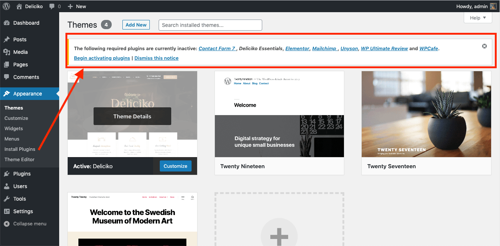
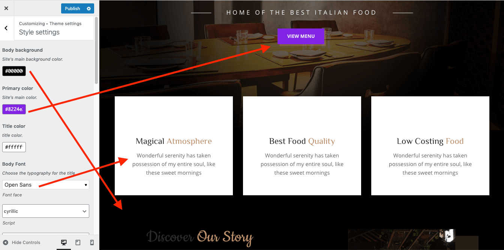
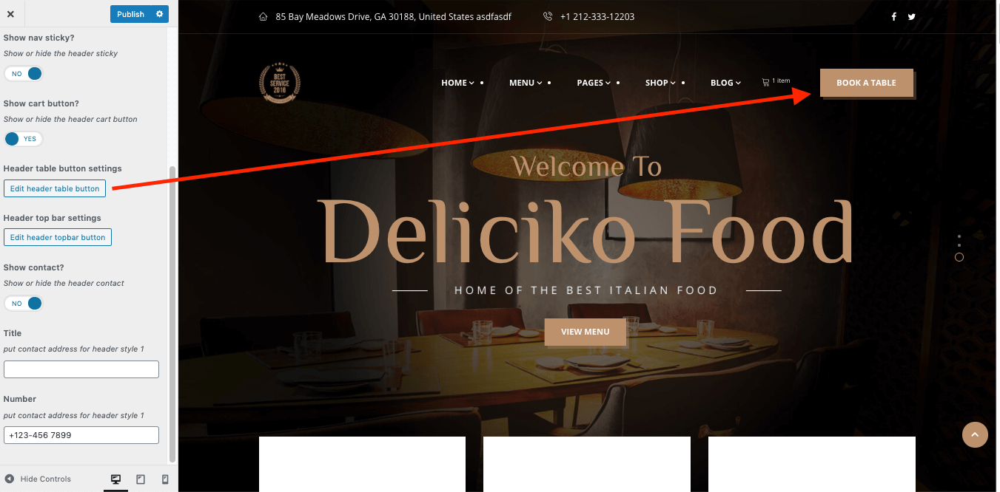
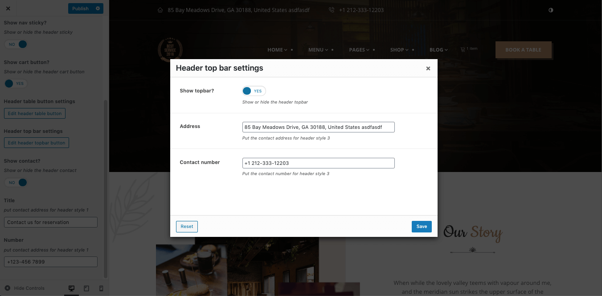

Getting Started #back to top
- Item Name : Deliciko - WordPress Theme
- Item Version : V 1.9
- Author : Tripples
- Support : Support Center
First of all, Thank you so much for purchasing this template and for
being my loyal customer.
You are awesome!
You are entitled to get free lifetime updates to this product +
exceptional support from the author directly.
Be careful while editing
the template. If not edited properly, the design layout may break
completely.
No support is provided for faulty customization.
Introduction and quick start guide. #back to
top
Thank you so much for purchasing our theme called Deliciko- WordPress Theme. Please feel free to contact us if you have questions or problems about this theme. No guarantee is provided, but we will do our best to provide you with the best possible assistance.
First Step
- Documentation - That's where you
- License - Some info's about theme licencing terms
- Dummy Content - Placeholder content for testing the theme
- SampleData - Import Data to get the exact Site as the Preview Page
- Upload - This is where all Theme files are (zipped & unzipped format)
Please read more about wordpress here
What are Parent and Child Themes?
A WordPress child theme takes the functionality of another theme, named parent theme. It gives you the possibility to customize an existing theme. Instead of modifying the theme files directly, you can activate the child theme and work within it.
All customizations are stored in the child theme and anything in the child takes priority over the parent. So if the same file exist in both child and parent, the file from the child will control that aspect of the theme.
Working with child themes, your customizations are safeguarded from future upgrades because you only upgrade the parent theme, which you never edit, while the customizations are protected in your child theme which you don’t upgrade.
Why use a Child theme?
Safe Updates. You can easily modify your website using child themes without ever changing the parent theme. When a new version of the parent theme appears, you can safely update it as all your modifications are saved in the child theme. Easy to Extend. A child theme has a great flexibility. It does not require writing a lot of code. You can modify only those template files and functions that you need.
Install Theme
The first option how to install this Theme would be to directly upload the Deliciko.zip file via WordPress Theme Uploader.- Minimal requirements:
- PHP 7+
- Php.ini settings:
upload_max_filesize = 32M
post_max_size = 48M
memory_limit = 512M
max_execution_time = 600
max_input_time = 400 - MySQL 5.0+
- Wordpress 5+
- Please make sure you have proper version of wordpress installed.
- Log Into WordPress and go to Appearance > Themes
- Find the Deliciko Theme and click activate
- FTP Upload:
- Unzip the "Deliciko.zip" file from theme folder
- Open up your FTP manager and connect to your hosting
- Browse to wp-content/themes
- Upload the Deliciko in theme folder
- Log Into WordPress and go to Appearance > Themes
- Find the Deliciko Theme and click activate
- Wordpress Dashboard:
- Log into your WordPress backend
- Navigate to Appearance > Themes
- Click Install Themes
- Click Upload
- Now you just need to find the "Deliciko.zip" in the Upload folder and hit Install now.
- After complete installation click on active button to active The theme.
If you are experiencing any issues during the installation I would recommend to check out this
Install Required Plugins
After activating the Deliciko theme you will see the below window. and install all required plugins.
Step 1:

Setp 2: Click on Tools > Demo content instll > Install
It will take some times to install full demo data like demo site.
You are done ! :)
Install with Normal process
Make sure you have upload your theme via appearance-> themes or via ftp. and Active the theme
If you are experiencing any issues during the installation I would recommend to check out this
Installation Screencast
- ACTIVATE THEME
- .. That's it ! :) ...
Quick video example to install a Quickstart Pack
Theme Customizer
Setting Location: Appearance -> Customize -> Theme SettingsGeneral Settings
Setting Location: Appearance -> Customize -> Theme Settings > General Settings
Preloader, Main Logo, sticky sidebar, breadcrumb and social links can be setup from here.
Preloader
Logo
Style Settings
Setting Location: Appearance -> Customize -> Theme Settings > Style Settings
From Appearance-> Customize -> Deliciko Options -> Theme Styling , you can change the body background, primary color, title color, font family, color, font size and also heading fonts etc.
Header Settings
Setting Location: Appearance -> Customize -> Theme Settings > Header Settings
Header style, cart button show/hide, book table button settings, top bar settings can be changed form the section.
Header Table Button Settings
Header Topbar Settings

Blog Settings
Setting Location: Appearance -> Customize -> Theme Settings > Blog Settings
Blog page sidebar setup, blog author show/hide etc. can be changed form here.
Sidebar
Blog Author
Visual Page Builder
Accessing the editor
To start working with Elementor, go to the WordPress dashboard. Then, add a new page by clicking on Pages > Add New. Then, create a new page and save it with the 'full width' template and then click on the 'Edit with Elementor' button.
Elementor UI: Getting to know the interface
The Elementor page builder includes these main areas:
1.
Panel (Top): Use the search field to find a widget.
2.
Widgets / Widget Settings: Choose a widget and configure it.
3.
Preview Button: Enables you to preview the page. Once clicked it
hides/shows the panel.
4.
Panel (Bottom): View page, Go back to Dashboard or Save page.
5.
Content Area: Drag & drop widgets and design your page.
6.
Add New Section / Add Template: Choose between creating a new
section
or inserting an existing template.
Creating your section
A section is the most basic element that you can work with. It's the building block of every page. A section can be set as full width and spread all over the screen, or receive the content area width (by default).
After you create a section you can drag and drop a widget inside. You can also divide each section to few columns. Every page you create can contain as many sections as you want. You can drag a section above or under another one to relocate it.
- Add New Section: Click this button to create a new section or simply drag a widget from the panel and drop it in the content area.
- Select Yout Structure: Choose a structure for your section (Later, you can edit the exact width of every column).
Elementor Add Section
Elementor Add Column

Inserting a widget
Click the content to edit, duplicate or delete a widget. You can also save it as a Global Widget. Add Widget: Drag a widget from the left panel and drop it into a column.
1. To edit a widget, click the pencil icon.
2. On the Panel header, you can choose to edit the widget's content and style.
3. Every widget has a different setting.
4. You can save your current changes at any stage.
5. When you have finished designing, click the 'X' button at the bottom panel and
view the page.
Deliciko Elementor Widgets
Deliciko Main slider
Food List
Food Tab
Deliciko Testimonial
Deliciko Chef Slider
Deliciko Chef
Food Blog
Post Vertical Feature Slider
Post Vertical Grid Slider
Post Vertical Grid
Post Vertical Grid 2
Deliciko Offers
Deliciko Counter
Deliciko Booking Form
Event Reservation
Deliciko Reservation Table
CSS Customization#back to top
Create a css file name style.css file on
Deliciko-child\style.css folder and write your own css
customization.
Some characteristics of the style.css file
- The file is not included by default
- The file is the last file to be loaded in your site.
Main css file is Deliciko/assets/scss/style.scss
What is a Child Theme?
As indicated in the overview, a child theme inherits the look and feel of the parent theme and all of its functions, but can be used to make modifications to any part of the theme. In this way, customizations are kept separate from the parent theme’s files. Using a child theme lets you upgrade the parent theme without affecting the customizations you’ve made to your site.
Child themes:
- 1.make your modifications portable and replicable;
- 2.keep customization separate from parent theme functions;
- 3.allow parent themes to be updated without destroying your modifications;
- 4. allow you to take advantage of the effort and testing put into parent theme;
- 5.save on development time since you are not recreating the wheel; and
- 6.are a great way to start learning about theme development.
Support Desk #back to top
Please remember you have purchased a very affordable theme and you have not paid for a full-time web design agency. Occasionally we will help with small tweaks, but these requests will be put on a lower priority due to their nature. Support is also 100% optional and we provide it for your connivence, so please be patient, polite and respectful.
Please visit our profile page or ask question in our Support Center
Support for my items includes:- * Responding to questions or problems regarding the item and its features
- * Fixing bugs and reported issues
- * Providing updates to ensure compatibility with new software versions
- * Customization and installation services
- * Support for third party software and plug-ins
- * Make sure your question is a valid Theme Issue and not a customization request.
- * Make sure you have read through the documentation and any related video guides before asking support on how to accomplish a task.
- * Make sure to double check the theme FAQs.
- * Try disabling any active plugins to make sure there isn't a conflict with a plugin. And if there is this way you can let us know.
- * If you have customized your theme and now have an issue, back-track to make sure you didn't make a mistake. If you have made changes and can't find the issue, please provide us with your changelog.
- * Almost 80% of the time we find that the solution to people's issues can be solved with a simple "Google Search". You might want to try that before seeking support. You might be able to fix the issue yourself much quicker than we can respond to your request.
- * Make sure to state the name of the theme you are having issues with when requesting support via ThemeForest.
Image Source #back to top
- https://unsplash.com/photos/yXnPoTkkY94
- https://elements.envato.com/de/stir-fried-vegetables-3ZRV9BQ
- https://elements.envato.com/de/meeting-place-in-restaurant-PQGQSCU
- https://elements.envato.com/de/restaurant-decor-P4393GF
- https://www.freepik.com/free-photo/restaurant_3563675.htm
- https://www.freepik.com/free-photo/restaurant-interior_1243339.htm
- https://elements.envato.com/de/breakfast-set-PAZWVHD
- https://www.freepik.com/free-photo/hamburger-table-restaurant_3538371.htm
- https://elements.envato.com/de/homemade-lunch-meat-pork-potatoes-and-vegetable-PSPXRDR
- https://elements.envato.com/de/salad-fusilli-pasta-with-tomatoes-asparagus-and-PRGK72T
- https://elements.envato.com/es-419/vegetarian-dinner-JTD2H96
- https://elements.envato.com/de/elegant-restaurant-table-setting-service-for-PNAFQ5A
Version History (Changelog) #back to top
You can check changelog on template sales page on Themeforest
Once again, thank you so much for purchasing this theme. As I said at the beginning, I'd be glad to help you if you have any questions relating to this theme. No guarantees, but I'll do my best to assist.
Changelog
Current Template Version 1.0 (see Change log at the bottom of Themeforest Item Description Page)